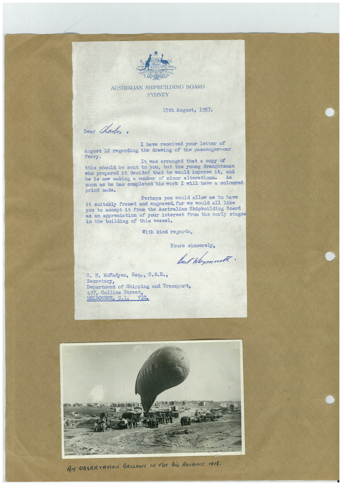

Book 1 · scan 043


Description
Transcription
Context
Review notes
Compare the machine draft with the scan. Handwriting and names need human review.
Artifacts
Edit the artifacts field in this note’s frontmatter to change these records. This summary is generated.
B01-S043-A01 — Letter, Photo & Handwritten note — Book 1, scan 043
Types: Typed document, Letter, Photo, Handwritten note
Scope: Whole scanned page; individual items can be split out during review.
Caption: Not mapped yet.
Caption source: Not recorded yet.
Caption status: unmapped
Machine transcription
AUSTRALIAN SHIPBUILDING BOARD SYDNEY 15th August, 1957- Dear Chails. I have received your letter of August 12 regarding the drawing of the passenger-car ferry. It was arranged that a copy of this should be sent to you, but the young draughtsman who prepared it decided that he would improve it, and he is now making a number of minor alterations. soon as he has completed his work I will have a coloured print made. Perhaps you would allow me to have it suitably framed and engraved, for we would all like you to accept it from the Australian Shipbuilding Board as an appreciation of your interest from the early stages in the building of this vessel. With kind regards, Tours sincerely, Bet hamat C. H. Maladyen, Esq., C.B.E., Secretary, Department of Shipping and Transport, 497, Collins Street, MELBOURNE. C.1. VIC. AN OBSERVATION BALLOON IN THE BiG ADVANCE 1918.